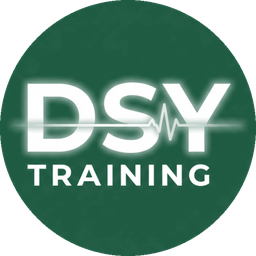

<!doctype html>
<html lang="en-AU">
<head>
<script src="/shared/gate.js?v=20261107a" data-level="stations"></script>
<meta charset="utf-8">
<meta name="viewport" content="width=device-width, initial-scale=1, viewport-fit=cover">
<title>Dementia skills stations - DSY Training</title>
<meta name="theme-color" content="#1f5b43">
<link rel="preconnect" href="https://fonts.googleapis.com">
<link rel="preconnect" href="https://fonts.gstatic.com" crossorigin>
<link href="https://fonts.googleapis.com/css2?family=Bricolage+Grotesque:opsz,wght@12..96,600;12..96,700&display=swap" rel="stylesheet">
<link rel="stylesheet" href="../../training/theme.css?v=20261110a">
<style>
/* Skills stations: a self-run practical night. The pages are drawn from STATIONS below.
   Routes: #s1 to #s4 one station, #end finish together, #setup instructor sheet, #print everything for printing. */
.wrap { gap: 1.1rem; }
.top a { color: inherit; text-decoration: none; }
.card { background: var(--surface); border: 1px solid var(--line); border-radius: var(--radius); padding: 1rem 1.1rem; display: flex; flex-direction: column; gap: .6rem; }
.card h3 { font-size: 1.1rem; }
.card.warn { background: color-mix(in srgb, var(--accent) 20%, var(--surface)); border-color: color-mix(in srgb, var(--accent) 55%, var(--line)); }
.card.red { background: color-mix(in srgb, var(--danger) 11%, var(--surface)); border-color: color-mix(in srgb, var(--danger) 40%, var(--line)); }
.card.dsy { border-style: dashed; }
.src { font-size: .78rem; color: var(--muted); overflow-wrap: anywhere; }
.src b { color: var(--brand); font-weight: 700; }
.door { display: flex; align-items: center; gap: .9rem; text-decoration: none; color: var(--ink); background: var(--surface); border: 1px solid var(--line);
  border-left: 8px solid var(--brand); border-radius: var(--radius); padding: .9rem 1rem; }
.door .n { flex: none; width: 2.4rem; height: 2.4rem; border-radius: 50%; display: grid; place-items: center; font-family: var(--font-head); font-weight: 700;
  background: var(--brand-soft); color: var(--brand); font-size: 1.15rem; }
.door.done .n { background: var(--ok); color: #fff; }
.door div { display: flex; flex-direction: column; line-height: 1.3; min-width: 0; }
.door small { color: var(--muted); }
.door.alt { border-left-color: var(--accent); }
ol.steps { padding-left: 1.4rem; display: flex; flex-direction: column; gap: .45rem; list-style: decimal; }
ul.dots { display: flex; flex-direction: column; gap: .35rem; }
ul.dots li { padding-left: 1.1rem; position: relative; }
ul.dots li::before { content: "›"; position: absolute; left: 0; font-weight: 800; color: var(--brand); }
.case { border: 1px solid var(--line); border-radius: 12px; padding: .8rem .9rem; display: flex; flex-direction: column; gap: .5rem; }
.case .who { font-weight: 700; }
.case details summary { cursor: pointer; font-weight: 600; color: var(--brand); }
.case details[open] summary { margin-bottom: .35rem; }
.answer { font-size: .95rem; }
table.t { width: 100%; border-collapse: collapse; font-size: .92rem; }
table.t th, table.t td { text-align: left; padding: .4rem .5rem; border-bottom: 1px solid var(--line); vertical-align: top; }
table.t th { font-size: .78rem; text-transform: uppercase; letter-spacing: .05em; color: var(--muted); }
.ticks { display: flex; flex-direction: column; gap: .2rem; }
.ticks label { display: flex; gap: .65rem; align-items: flex-start; padding: .35rem 0; cursor: pointer; }
.ticks input { width: 1.3rem; height: 1.3rem; flex: none; margin-top: .15rem; accent-color: var(--brand); }
.field { display: flex; flex-direction: column; gap: .3rem; font-weight: 600; font-size: .9rem; }
.field input, .field textarea { font-weight: 400; padding: .6rem .7rem; border: 1px solid var(--line); border-radius: 10px; background: var(--bg); color: var(--ink); width: 100%; }
.btns { display: flex; flex-wrap: wrap; gap: .5rem; }
.qr { display: flex; align-items: center; gap: 1rem; }
.qr .code { flex: none; background: #fff; padding: 6px; border-radius: 6px; }
.qr .code img, .qr .code canvas { display: block; width: 110px; height: 110px; }
.foot { font-size: .8rem; color: var(--muted); }
.pagebreak { display: none; }
.printonly { display: none; }
[hidden] { display: none !important; }
@media print {
  @page { size: A4; margin: 14mm; }
  :root { --bg: #fff; --surface: #fff; --ink: #111; --muted: #444; --line: #bbb; --brand: #1f5b43; --brand-soft: #e7efe9; color-scheme: light; }
  body { background: #fff; font-size: 11pt; }
  .wrap, .stack { display: block; width: 100%; padding: 0; }
  .wrap > * + *, .stack > * + * { margin-top: .6rem; }
  .card { display: block; } .card > * + * { margin-top: .4rem; }
  .noprint { display: none !important; }
  .printonly { display: block; }
  .pagebreak { display: block; break-after: page; height: 0; }
  .case, tr, li, .qr, .ticks label { break-inside: avoid; }
  h2, h3 { break-after: avoid; }
  .card { padding: .6rem .8rem; gap: .4rem; }
  .case details summary { display: none; }
  .answer::before { content: "Answer: "; font-weight: 700; }
  .ticks label { display: block; padding: .15rem 0; }
  .ticks label::before { content: "☐"; font-size: 1.1rem; margin-right: .5rem; }
  .ticks input { display: none; }
}
</style>
</head>
<body>
<main class="wrap" id="app"></main>
<script src="https://cdnjs.cloudflare.com/ajax/libs/qrcodejs/1.0.0/qrcode.min.js"></script>
<script>
/* Dementia and changed behaviours skills stations (AO). Built 10 Nov 2026 for a group training night without the
   instructor present, to go with the module /microlearning/dementia/ and the walk-through /modules/dementia-ao/ (Joan, 84).
   Sources, exported 31.08.2026: CPP-017-AO Acute Behavioural Disturbance - AO v7.1; CTL-011 Risk Assessment Matrix;
   CTL-052 Possible Causes of Agitation; CTL-053 SAT; CTL-056 MSE; CTL-122 STAMP; CTL-123 LOWLINE; CTL-125 Mental Health
   Act 2009 & Care and Control (Statement for PCR); CTL-094 PAINAD v1.0; CPP-013-AO Pain Management v7.2 (paracetamol);
   CTL-062 NEWS2 (as in the sepsis module). The PLST and NDB models and the de-escalation points are from the SAAS CEP
   Semester 2 2026 Dementia session (owner's files). Patient cards, the role-play lines and how-to-run notes are DSY-written.
   No restraint practice at these stations (DSY rule: the restraint net is for trained crews, with the lead instructor). */
var SRC = {
  cpp017: "CPP-017-AO Acute Behavioural Disturbance v7.1",
  c011: "CTL-011 Risk Assessment Matrix",
  c052: "CTL-052 Possible Causes of Agitation",
  c053: "CTL-053 SAT (Sedation Assessment Tool)",
  c056: "CTL-056 MSE (Mental State Examination)",
  c122: "CTL-122 STAMP",
  c123: "CTL-123 LOWLINE",
  c125: "CTL-125 Care and Control (Statement for PCR)",
  c094: "CTL-094 PAINAD (Advanced Dementia) v1.0",
  cpp013: "CPP-013-AO Pain Management v7.2",
  c062: "CTL-062 NEWS2 Adult Sepsis Screening Tool v1.1",
  cep: "SAAS CEP Dementia session (Semester 2 2026)",
  lead: "DSY lead instructor",
  dsy: "DSY-written for practice: check with your instructor"
};

var STATIONS = [
{ id: "s1", n: 1, title: "Before you go in: risk and first look", mins: 15,
  goal: "Do a CTL-011 risk assessment from the MDT and the doorway, spot escalating agitation with STAMP, and give a SAT score.",
  kit: ["This page on a phone", "The cards below (or read them aloud)", "A pen and paper"],
  blocks: [
    { h: "Risk factors for violent behaviour", src: ["c011"], list: [
      "History of previous violence (most important)", "Impulsiveness", "Young males (aggression is amplified by large groups)", "History of child abuse",
      "Substance abuse, intoxication or drug withdrawal", "Personality disorder", "Psychosis (especially with command hallucinations)",
      "Dementia (may present agitated because of paranoid delusions)", "Organic brain disorder (head injury, metabolic disturbance, delirium)"
    ] },
    { h: "High risk of violence", src: ["c011"], tone: "red", list: [
      "Behaviours: drug use with violence or aggression; a weapon; verbal threats of violence; attempts to injure bystanders or crew; a past history of severe violence towards crews or allied health",
      "1. Do not enter, or withdraw immediately",
      "2. Request SAPOL",
      "3. If in immediate danger, call Code 51 or activate the radio duress alarm"
    ] },
    { h: "STAMP: agitation is building", src: ["c122"], list: [
      "Staring: more eye contact, or less", "Tone: louder, yelling, sarcastic, obstructive or intrusive",
      "Anxiety: increasing, driven by fear or frustration", "Mumbling: slurred or incoherent, repeating the same questions",
      "Pacing: a reliable sign. Also staggering, waving arms, clenched or shaking fists"
    ] },
    { h: "SAT", src: ["c053"], list: [
      "+3 combative, violent, out of control; continual loud outburst", "+2 very anxious and agitated; loud outbursts",
      "+1 anxious, restless; normal or talkative speech", "0 awake and calm, cooperative; speaks normally",
      "-1 asleep but rouses if name is called; slurring or slowing", "-2 responds to physical stimulation; few recognisable words", "-3 no response; nil"
    ] },
    { h: "Cards", src: ["dsy", "c011", "c053"], cases: [
      { who: "A. Joan, 84", text: "MDT: dementia, agitated, doesn't recognise her husband, pushed his hand away. No weapons, no threats, husband safe at the door. Inside: walking between the table and the hall, staring, raised voice, asking the same question again and again.",
        answer: "Dementia is a risk factor, but no high-risk behaviours: go in carefully, keep reassessing, one voice. STAMP: staring, tone, anxiety, repeating, pacing. SAT +2 (very anxious and agitated, loud outbursts)." },
      { who: "B. Joan with a knife", text: "Same house. As you reach the door, Joan is holding a kitchen knife and shouting at her husband to get out.",
        answer: "A weapon: high risk of violence. Don't enter or withdraw, request SAPOL, and Code 51 or the duress alarm if anyone is in immediate danger. Help her husband out only if it is safe." },
      { who: "C. Aged-care resident, 79", text: "Walking up and down the corridor, calling out for his wife, wringing his hands. Talks normally when staff speak to him. No weapons, no threats.",
        answer: "Not high risk. STAMP: pacing, anxiety. SAT +1 (anxious, restless, speech normal). Look for the unmet need: toilet, pain, loneliness, fear." },
      { who: "D. After a long day, 88", text: "Asleep in her chair when you arrive. Opens her eyes when you say her name, words a little slow.",
        answer: "SAT -1 (asleep but rouses to name, slowing). Is this her normal? Ask the family, and look for a cause (CTL-052)." }
    ] },
    { h: "How to run it", src: ["dsy"], steps: [
      "One person reads a card. The others decide: go in or not, what STAMP signs, what SAT score. Then open the answer.",
      "Say the high-risk actions out loud in order. Take turns reading."
    ] }
  ],
  checks: ["Named dementia and delirium as CTL-011 risk factors", "Said the three high-risk actions in order", "Named all five STAMP letters",
    "Gave the right SAT for cards A and C", "Chose not to enter for card B"] },

{ id: "s2", n: 2, title: "One voice: LOWLINE", mins: 20,
  goal: "Settle a frightened person living with dementia using LOWLINE, the room, small permissions, and acknowledging and redirecting.",
  kit: ["A kitchen chair and a table", "A phone or radio playing loud talk", "A cardigan and a pair of hearing aid cases (props)", "Three people: Joan, AO1, AO2"],
  blocks: [
    { h: "De-escalation skills", src: ["cpp017"], list: [
      "Personal space, body language, eye contact, voice tone and style, reassurance of safety, STAMP and LOWLINE",
      "Care is voluntary where possible. Restrictive practices are measures of last resort"
    ] },
    { h: "LOWLINE", src: ["c123"], steps: [
      "Listen: to the issue and their concerns. Non-directive, non-intrusive verbal feedback.",
      "Offer reflective comments that show you've heard and that validate what they're experiencing.",
      "Wait until they've explained, said their concerns and how they feel.",
      "Look: keep appropriate eye contact.",
      "Incline your head slightly: listening, non-threatening.",
      "Nod to show you've understood.",
      "Express empathy."
    ] },
    { h: "What works with dementia", src: ["cep"], list: [
      "Change the room: fewer people, TV or radio down, softer light, a blanket",
      "Calm tone, relaxed posture. Never contradict or challenge. Redirect to familiar topics",
      "Small permissions, one at a time (\"Can I sit here?\"). Give back as much control as you can",
      "Take your time when there's no immediate risk",
      "Acknowledge and redirect: \"They're trying to take my baby.\" Don't disagree: ask the baby's name"
    ] },
    { h: "Lines for Joan's player", src: ["dsy"], cases: [
      { who: "1. \"There's a strange man in my house.\"", text: "(She means her husband.)", answer: "\"That sounds frightening. You're safe, I'm here to help. Will you tell me about your house?\" Not: \"That's your husband.\"" },
      { who: "2. \"I have to go home. Mum will be waiting.\"", text: "", answer: "\"Tell me about your mum. Where did you grow up?\" Listen, wait, nod. Not: \"Your mum died years ago.\"" },
      { who: "3. \"Who are you? Who let you in?\"", text: "", answer: "Stop at a distance, at her level: \"I'm [name] from the ambulance. I've come to see if you're all right. Can I sit here?\"" },
      { who: "4. \"I've got to pick the kids up from school.\"", text: "", answer: "\"You must be a good mum. What are their names?\" Acknowledge the worry, then redirect." }
    ] },
    { h: "How to run it", src: ["dsy"], steps: [
      "Round 1, the rushed crew: both crew talk at once, the radio stays on, and they correct Joan. Joan's player reacts honestly.",
      "Round 2, LOWLINE: one voice. AO2 turns the radio off and takes the husband aside. AO1 sits at her level, asks small permissions, and uses the lines above.",
      "Joan's player says what made them calmer or more upset, and gives a SAT for each round. Swap roles."
    ] }
  ],
  checks: ["Only one crew member talked to Joan", "Changed the room: radio off, fewer people", "Asked permission before sitting and before touching",
    "Didn't contradict or correct her", "Used at least four LOWLINE steps", "Joan's SAT came down between rounds"] },

{ id: "s3", n: 3, title: "PAINAD: score the pain", mins: 15,
  goal: "Score pain with PAINAD in a person who can't tell you about it, treat it, and score again.",
  kit: ["This page", "A partner to act out each card", "Paracetamol training stock or an empty packet labelled TRAINING: nobody takes a tablet"],
  blocks: [
    { h: "PAINAD: each item 0, 1 or 2", src: ["c094"], list: [
      "Breathing (independent of vocalisation): 0 normal; 1 occasional laboured breathing, short period of hyperventilation; 2 noisy laboured breathing, long period of hyperventilation, Cheyne-Stokes",
      "Negative vocalisation: 0 none; 1 occasional moan or groan, low-level speech with a negative quality; 2 repeated troubled calling out, loud moaning or groaning, crying",
      "Facial expression: 0 smiling or inexpressive; 1 sad, frightened, frown; 2 facial grimacing",
      "Body language: 0 relaxed; 1 tense, distressed, pacing, fidgeting; 2 rigid, fists clenched, knees pulled up, pulling or pushing away, striking out",
      "Consolability: 0 no need to console; 1 distracted or reassured by voice or touch; 2 unable to console, distract or reassure",
      "Total 0 (no observable pain) to 10 (highest observable pain). CTL-094 gives no severity bands"
    ] },
    { h: "Then treat it", src: ["cpp013"], list: [
      "Basic measures: reassurance, posture, splinting, temperature control",
      "Paracetamol: adults oral 1000 mg, if none in the past 4 hours. Offer it; care is voluntary",
      "Score again after treatment and record both"
    ] },
    { h: "Cards to act and score", src: ["dsy", "c094"], cases: [
      { who: "A. Joan in the kitchen", text: "Breathing normal. Moans now and then. Grimaces when she shifts in the chair. Pushed her husband's hand away. He can't settle her.", answer: "0 + 1 + 2 + 2 + 2 = 7." },
      { who: "B. Joan, 30 minutes later", text: "Breathing normal. Quiet. A slight frown. A little fidgety. Settles when you speak to her.", answer: "0 + 0 + 1 + 1 + 1 = 3." },
      { who: "C. In bed, 91", text: "Noisy laboured breathing. Calling out again and again. Grimacing. Knees pulled up. Nothing settles him.", answer: "2 + 2 + 2 + 2 + 2 = 10. Look for the source urgently, and consider all causes (CTL-052)." },
      { who: "D. In the lounge, 82", text: "Breathing normal. An occasional groan. Frowning. Fidgeting with her blanket. Calms when you hold her hand.", answer: "0 + 1 + 1 + 1 + 1 = 4." }
    ] },
    { h: "How to run it", src: ["dsy"], steps: [
      "Your partner acts out a card without saying the score. Everyone scores it on their own, then compare.",
      "For card A: check the last paracetamol (0800; it's now 1920), offer it with the training packet, then rescore with card B.",
      "Swap actors."
    ] }
  ],
  checks: ["Named all five PAINAD items", "Scored cards A to D within 1 point", "Checked the time of the last paracetamol before offering it",
    "Said paracetamol 1000 mg oral, none in the past 4 hours", "Rescored after treatment"] },

{ id: "s4", n: 4, title: "Look for the cause: obs with consent, and the MSE", mins: 20,
  goal: "Take a set of obs one permission at a time, rule causes in or out, and complete an MSE.",
  kit: ["Monitor (SpO2, NIBP), BGL monitor with the control solution, thermometer", "A partner as Joan, with the findings card below", "The SAAS Clinical app (NEWS2 calculator)"],
  blocks: [
    { h: "Look for the cause first", src: ["cpp017", "c052", "cep"], list: [
      "CPP-017-AO: consider all possible causes, including hypoxia, hypovolaemia, hypoglycaemia, head injury, infection and substance use, and treat where possible",
      "Suddenly agitated? Think first: pain, hypoxia, infection, hypoglycaemia, needing the toilet",
      "CTL-052 lists BPSD and delirium too. A change from the person's usual self is a reason to look for a medical cause"
    ] },
    { h: "Obs one step at a time", src: ["cep", "dsy"], steps: [
      "Tell her what you'd like to do, one thing at a time, and wait for a yes (or a nod).",
      "Start with the least frightening: watch the breathing, then the SpO2 probe, then the wrist pulse.",
      "BP cuff next; if she pulls away, stop, reassure, try again later.",
      "Thermometer and the BGL finger prick last. Use the control solution on your partner unless they consent to a real test."
    ] },
    { h: "Suspected infection", src: ["c062"], list: [
      "Run NEWS2 in the SAAS Clinical app for every patient with a suspected infection",
      "New confusion scores 3 on NEWS2: any single score of 3 is the high band. Consider management as per the Sepsis CPP, consider clinical support, transport, say suspected sepsis at handover, obs and NEWS2 every 15 minutes"
    ] },
    { h: "MSE headings", src: ["c056", "cpp017"], list: [
      "Appearance: posture, body habits, grooming, gait", "Behaviour: mannerisms, eye contact, motor activity, agitation, inappropriate actions",
      "Conversation: quantity, rate, volume", "Mood and affect: mood, range, stability, appropriateness",
      "Perception: hallucinations, delusions, heightened perception, depersonalisation, suicidal thoughts",
      "Cognition: level of consciousness, orientation (time, place, person), concentration, memory", "Insight: good, partial or poor",
      "CPP-017-AO: the MSE must be completed and documented"
    ] },
    { h: "Findings card for Joan's player", src: ["dsy"], cases: [
      { who: "Joan, 84", text: "RR 18, SpO2 96% air, BP 128/74, pulse 96, temp 37.6, GCS 14 (E4 V4 M6), BGL 7.2. More confused than usual since yesterday, going to the toilet a lot, says it stings. Cardigan half on, unsteady. Loud, fast, repeating herself. Frightened. Thinks a stranger is in the house. Knows her own name only.",
        answer: "Hypoxia and hypoglycaemia ruled out. Possible infection and delirium. NEWS2 4 (new confusion 3, pulse 1) = high band (DSY worked score: check it in the app). MSE: appearance unkempt, unsteady; behaviour restless, pacing; conversation loud, fast, repetitive; mood anxious, frightened; perception believes a stranger is in the house; cognition alert, oriented to person only; insight poor." }
    ] },
    { h: "How to run it", src: ["dsy"], steps: [
      "Joan's player holds the findings card and pulls away if anyone rushes or doesn't ask.",
      "Take the obs one permission at a time. Read the values off the card.",
      "Run NEWS2 in the app. Say which causes you've ruled in or out.",
      "Write the MSE under the seven headings, then compare with the answer. Swap."
    ] }
  ],
  checks: ["Asked before each step, and stopped when she pulled away", "Said which causes were ruled out (hypoxia, hypoglycaemia)", "Ran NEWS2 and named the band",
    "MSE written under all seven headings", "Named infection and delirium as possible causes"] },

{ id: "s5", n: 5, title: "When de-escalation isn't enough", mins: 20,
  goal: "Know what CPP-017-AO says when agitation persists, make the EOC Clinician call, and write the care and control documentation.",
  kit: ["A phone to role-play the EOC Clinician call", "A blank PCR or paper", "Nobody takes or handles any medicine at this station"],
  blocks: [
    { h: "Safety", src: ["lead"], tone: "red", list: ["No restraint practice at this station. The restraint net is only for trained crews, with your lead instructor"] },
    { h: "De-escalation unsuccessful or agitation persists", src: ["cpp017"], steps: [
      "Consider clinical support.",
      "Consult the EOC Clinician, who may recommend oral lorazepam 1 mg to 3 mg, or oral olanzapine 5 to 10 mg.",
      "If symptoms continue after 30 minutes, consult the EOC Clinician again.",
      "Monitor the respiratory rate and regular vital signs.",
      "Consider SAPOL where necessary.",
      "Facilitate transport to an appropriate health facility for medical assessment."
    ] },
    { h: "Involuntary care (Mental Health Act 2009)", src: ["cpp017"], list: [
      "The patient appears to have a mental illness AND has caused, or there's a significant risk of them causing, harm to themselves, others or property, or otherwise requires medical examination",
      "AOs must discuss the clinical and legal provision of care under the Act with the EOC Clinician: consult about 'care and control' potential",
      "If authorised: tell the patient they're in the care and control of an authorised officer; give the patient or caregiver a statement of rights where practical; transport for medical assessment",
      "Consider SAPOL, clinical support for sedation for safe transport, and the restraint net only if trained and available AND nothing less restrictive has kept the patient or crew safe"
    ] },
    { h: "Documentation", src: ["c125"], list: [
      "Who you consulted, why, and the outcome", "Clinical evidence or reasoning for using the Act", "Powers used (e.g. sedation, restraint, search)",
      "That a statement of rights was given, or why not",
      "The statement: \"Based on the patient's clinical presentation outlined above, this patient has been taken into the Care and Control of an Authorised Officer of SA Ambulance Service in accordance with the Mental Health Act 2009 at [TIME AND LOCATION] on [DATE].\" Then full name, signature, clinical level and SAAS ID",
      "When it ends: \"Due to [REASON, E.G. HANDOVER] the Care and Control was ceased at [TIME AND LOCATION] on [DATE].\""
    ] },
    { h: "Cards", src: ["dsy", "cpp017"], cases: [
      { who: "A. Joan settles", text: "After LOWLINE, the toilet and paracetamol, Joan is SAT +1, holding her husband's hand, and agrees to go to hospital if he comes.",
        answer: "Voluntary care. No medication needed. Consult the EOC Clinician for the plan and transport for medical assessment." },
      { who: "B. Joan doesn't settle", text: "Forty minutes in, Joan is still SAT +2, won't let anyone near, and keeps trying to go out the back door into the dark.",
        answer: "Consider clinical support and consult the EOC Clinician (who may recommend oral lorazepam or olanzapine). Reconsult after 30 minutes if no better. Monitor RR and vital signs. Consider SAPOL. Discuss care and control with the EOC Clinician." },
      { who: "C. Medication given", text: "On EOC Clinician advice Joan has taken an oral medicine. Twenty minutes later she is drowsy, SAT -1.",
        answer: "Monitor the respiratory rate and regular vital signs closely (CPP-017-AO). The SAT measures sedation as well as agitation. Tell the EOC Clinician." }
    ] },
    { h: "How to run it", src: ["dsy"], steps: [
      "Read card B. One person rings the 'EOC Clinician' (a partner) and gives a one-minute ISBAR: the risk, what you've tried, SAT, PAINAD, obs, and what you're asking.",
      "The 'EOC Clinician' authorises care and control. Write the documentation and the care and control statement on the PCR.",
      "Read cards A and C and say what changes. Swap."
    ] }
  ],
  checks: ["Said the CPP-017-AO steps in order, including the 30-minute reconsult", "Named both medicines and their oral dose ranges", "Gave a one-minute ISBAR to the EOC Clinician",
    "Wrote the care and control statement with time, place and date", "Said when the restraint net may be considered"] }
];

var END = { title: "Finish together", mins: 25,
  steps: [
    "Run the whole job as one crew with the student walk-through: Joan, 84, near Cummins. Use each station's kit as you reach that part: the kitchen chair, the PAINAD cards, the obs and the EOC Clinician call.",
    "Then each person does the knowledge check in the microlearning on their own phone, and writes Joan's PCR in the PCR trainer if there's time.",
    "Write any questions for the instructor below, then send your record."
  ] };

var KEY = "dsy-stations-dementia";

var state = (function () { try { return JSON.parse(localStorage.getItem(KEY)) || {}; } catch (e) { return {}; } })();
state.ticks = state.ticks || {};
function save() { try { localStorage.setItem(KEY, JSON.stringify(state)); } catch (e) {} }

var app = document.getElementById("app");
// QR codes and printed links always point at the live site, so a pack printed from a test copy still works.
var root = "https://dsytraining.com/";
var here = root + "stations/dementia/";
function el(tag, cls, text) { var n = document.createElement(tag); if (cls) n.className = cls; if (text != null) n.textContent = text; return n; }
function a(text, href, cls) { var x = el("a", cls || "btn small ghost", text); x.href = href; return x; }
function srcLine(keys) {
  var p = el("p", "src");
  keys.forEach(function (k, i) { if (i) p.appendChild(document.createTextNode(" · ")); var b = el(k === "dsy" ? "span" : "b", null, SRC[k]); p.appendChild(b); });
  return p;
}
function header(sub) {
  var h = el("header", "top"), b = el("a", "brand"); b.href = "#";
  b.innerHTML = '<div class="brand-icon"></div>';
  var t = el("div"); t.appendChild(el("h1", null, "Dementia skills stations")); t.appendChild(el("p", null, sub)); b.appendChild(t); h.appendChild(b);
  return h;
}
function qr(box, url) {
  var c = el("div", "code"); box.appendChild(c);
  if (window.QRCode) new QRCode(c, { text: url, width: 220, height: 220, correctLevel: QRCode.CorrectLevel.M });
}
function done(s) { var t = state.ticks[s.id] || {}; return s.checks.every(function (_, i) { return t[i]; }); }

function block(b) {
  var c = el("section", "card" + (b.tone ? " " + b.tone : "") + (b.src && b.src.indexOf("dsy") >= 0 ? " dsy" : ""));
  if (b.h) c.appendChild(el("h3", null, b.h));
  if (b.text) c.appendChild(el("p", null, b.text));
  if (b.list) { var u = el("ul", "dots"); b.list.forEach(function (x) { u.appendChild(el("li", null, x)); }); c.appendChild(u); }
  if (b.steps) { var o = el("ol", "steps"); b.steps.forEach(function (x) { o.appendChild(el("li", null, x)); }); c.appendChild(o); }
  if (b.table) {
    var t = el("table", "t"), tr = el("tr"); b.table.head.forEach(function (x) { tr.appendChild(el("th", null, x)); }); t.appendChild(tr);
    b.table.rows.forEach(function (r) { var row = el("tr"); r.forEach(function (x) { row.appendChild(el("td", null, x)); }); t.appendChild(row); });
    c.appendChild(t);
  }
  if (b.cases) b.cases.forEach(function (k) {
    var d = el("div", "case"); d.appendChild(el("p", "who", k.who)); if (k.text) d.appendChild(el("p", null, k.text));
    var det = el("details"); det.appendChild(el("summary", null, "Show the answer"));
    var inner = el("div"); inner.appendChild(el("p", "answer", k.answer));
    if (k.eoc) { var e = el("p", "answer"); e.innerHTML = "<b>EOC Clinician (role-play):</b> "; e.appendChild(document.createTextNode(k.eoc)); inner.appendChild(e); }
    det.appendChild(inner); d.appendChild(det); c.appendChild(d);
  });
  if (b.choose) {
    // pick-one toggle (e.g. CT-6 or Slishman): the choice is kept on this phone; printing shows every option
    var ch = b.choose; c.appendChild(el("h3", null, ch.h));
    var row = el("div", "btns noprint"), body = el("div", "stack");
    function show() {
      body.innerHTML = "";
      ch.options.forEach(function (o) { if (PRINT || state[ch.key] === o.value) o.blocks.forEach(function (x) { body.appendChild(block(x)); }); });
      if (!PRINT && !state[ch.key]) body.appendChild(el("p", "src", "Choose one to see its steps."));
      row.querySelectorAll("button").forEach(function (x) { x.className = "btn small" + (state[ch.key] === x.value ? "" : " ghost"); });
    }
    ch.options.forEach(function (o) {
      var btn = el("button", "btn small ghost", o.label); btn.type = "button"; btn.value = o.value;
      btn.addEventListener("click", function () { state[ch.key] = o.value; save(); show(); }); row.appendChild(btn);
    });
    c.appendChild(row); c.appendChild(body); show();
  }
  if (b.src) c.appendChild(srcLine(b.src));
  return c;
}

function stationPage(s, print) {
  var f = document.createDocumentFragment();
  if (!print) f.appendChild(header("Station " + s.n + " of " + STATIONS.length));
  var head = el("section", "stack");
  var hq = el("div", "qr");
  if (print) qr(hq, here + "#" + s.id);
  var ht = el("div", "stack"); ht.appendChild(el("p", "eyebrow", "Station " + s.n + " · about " + s.mins + " minutes"));
  ht.appendChild(el("h2", null, s.title)); ht.appendChild(el("p", null, s.goal));
  if (print) ht.appendChild(el("p", "src", "Scan for this station on your phone"));
  hq.appendChild(ht); head.appendChild(hq); f.appendChild(head);
  f.appendChild(block({ h: "Kit", list: s.kit }));
  s.blocks.forEach(function (b) { f.appendChild(block(b)); });
  var c = el("section", "card"); c.appendChild(el("h3", null, "Partner check"));
  c.appendChild(el("p", "src", "Your partner ticks each one when they see you do it. Swap and go again."));
  var box = el("div", "ticks"), t = state.ticks[s.id] = state.ticks[s.id] || {};
  s.checks.forEach(function (x, i) {
    var l = el("label"), cb = el("input"); cb.type = "checkbox"; cb.checked = !!t[i];
    cb.addEventListener("change", function () { t[i] = cb.checked; save(); });
    l.appendChild(cb); l.appendChild(el("span", null, x)); box.appendChild(l);
  });
  c.appendChild(box); f.appendChild(c);
  if (!print) {
    var nav = el("div", "btns noprint"), i = STATIONS.indexOf(s);
    nav.appendChild(a("All stations", "#", "btn small ghost"));
    nav.appendChild(i < STATIONS.length - 1 ? a("Next: station " + (i + 2), "#" + STATIONS[i + 1].id, "btn small") : a("Finish together", "#end", "btn small"));
    f.appendChild(nav);
  }
  return f;
}

function endPage(print) {
  var f = document.createDocumentFragment();
  if (!print) f.appendChild(header("Finish together"));
  var head = el("div", "qr"); if (print) qr(head, here + "#end");
  var ht = el("div", "stack"); ht.appendChild(el("p", "eyebrow", "Last · about " + END.mins + " minutes")); ht.appendChild(el("h2", null, END.title));
  head.appendChild(ht); f.appendChild(head);
  f.appendChild(block({ steps: END.steps }));
  var links = el("div", "btns noprint");
  links.appendChild(a("Student walk-through", "../../modules/dementia-ao/?mode=student", "btn small"));
  links.appendChild(a("Knowledge check (microlearning)", "../../microlearning/dementia/", "btn small ghost"));
  f.appendChild(links);
  if (print) { f.appendChild(el("p", "printonly src", "Walk-through: " + root + "modules/dementia-ao/?mode=student")); return f; }
  var c = el("section", "card"); c.appendChild(el("h3", null, "Send your record to the instructor"));
  var nm = el("label", "field", "Names of everyone here"), ni = el("input"); ni.value = state.names || ""; ni.placeholder = "First names";
  ni.addEventListener("input", function () { state.names = ni.value; save(); }); nm.appendChild(ni); c.appendChild(nm);
  var qq = el("label", "field", "Questions or anything that didn't work"), qt = el("textarea"); qt.rows = 3; qt.value = state.q || "";
  qt.addEventListener("input", function () { state.q = qt.value; save(); }); qq.appendChild(qt); c.appendChild(qq);
  var b = el("button", "btn", "Share the record"); b.type = "button"; var msg = el("p", "src");
  b.addEventListener("click", function () {
    var lines = ["DSY dementia skills stations, " + new Date().toLocaleDateString("en-AU"), "Crew: " + (state.names || "(no names)")];
    STATIONS.forEach(function (s) {
      var t = state.ticks[s.id] || {}, n = s.checks.filter(function (_, i) { return t[i]; }).length;
      lines.push("Station " + s.n + " " + s.title + ": " + n + " of " + s.checks.length + " ticked");
      s.checks.forEach(function (x, i) { if (!t[i]) lines.push("  not ticked: " + x); });
    });
    if (state.q) lines.push("Questions: " + state.q);
    var text = lines.join("\n");
    if (navigator.share) { navigator.share({ title: "Dementia skills stations", text: text }).catch(function () {}); return; }
    (navigator.clipboard ? navigator.clipboard.writeText(text) : Promise.reject()).then(function () { msg.textContent = "Copied. Paste it into a message to your instructor."; }, function () { msg.textContent = text; });
  });
  c.appendChild(b); c.appendChild(msg);
  var r = el("button", "btn small ghost", "Clear the ticks for the next group"); r.type = "button";
  r.addEventListener("click", function () { if (confirm("Clear all ticks, names and questions on this phone?")) { state = { ticks: {} }; save(); go(); } });
  c.appendChild(r);
  f.appendChild(c);
  return f;
}

function setupPage(print) {
  var f = document.createDocumentFragment();
  if (!print) f.appendChild(header("Instructor setup"));
  f.appendChild(el("h2", null, "Instructor setup sheet"));
  f.appendChild(block({ h: "The night at a glance", table: { head: ["Time", "What"], rows: [
    ["Before", "Everyone does the microlearning \"Dementia and changed behaviours\" (about 25 min). Send the link a few days ahead."],
    ["0:00", "Read the safety box at station 5 together (no restraint practice, nobody takes a medicine). Split into threes: station 2 needs three people."],
    ["0:05", "Rotate through stations 1 to 5 (about 15 to 20 min each). Partners tick the checks on the phone."],
    ["about 1:35", "Finish together: the student walk-through as one crew, then the knowledge check."],
    ["End", "Share the record with the instructor. Pack up and reset."]
  ] } }));
  var kit = el("section", "card"); kit.appendChild(el("h3", null, "Kit by station"));
  STATIONS.forEach(function (s) { kit.appendChild(el("p", null, s.n + ". " + s.title)); var u = el("ul", "dots"); s.kit.forEach(function (x) { u.appendChild(el("li", null, x)); }); kit.appendChild(u); });
  f.appendChild(kit);
  f.appendChild(block({ h: "Set up", src: ["dsy"], steps: [
    "Tape each station's printed page (with its QR code) at the station, or print one pack per group.",
    "Station 2: a kitchen chair and a table, a phone or radio to play loud talk, a cardigan and hearing aid cases.",
    "Station 3: paracetamol training stock or an empty packet labelled TRAINING, kept apart from operational stock. Nobody takes a tablet.",
    "Station 4: monitor (SpO2, NIBP), BGL monitor with the control solution, thermometer, a phone with the SAAS Clinical app.",
    "Station 5: a phone for the EOC Clinician role-play and a blank PCR. No restraint net and no medicines at this station.",
    "Leave this page open on one phone so the group can find the finish."
  ] }));
  f.appendChild(block({ h: "Pack up and reset", src: ["dsy"], list: [
    "Monitor and BGL monitor cleaned and on charge; sharps in the sharps container.",
    "Training medicine packs back in their labelled box.",
    "On the phone used for ticks: Finish together > Clear the ticks for the next group."
  ] }));
  var q = el("section", "card"); q.appendChild(el("h3", null, "Station links"));
  var row = el("div", "stack");
  STATIONS.concat([{ id: "end", n: "", title: END.title }]).forEach(function (s) {
    var x = el("div", "qr"); qr(x, here + "#" + s.id); var t = el("div"); t.appendChild(el("b", null, (s.n ? "Station " + s.n + ": " : "") + s.title));
    t.appendChild(el("p", "src", here + "#" + s.id)); x.appendChild(t); row.appendChild(x);
  });
  q.appendChild(row); f.appendChild(q);
  return f;
}

function home() {
  var f = document.createDocumentFragment();
  f.appendChild(header("A practical night you can run as a team"));
  var i = el("section", "stack");
  i.appendChild(el("p", null, "Five stations to practise the hands-on parts of a dementia job, then one full job together. Work in pairs or threes. At each station, read the page, practise, and have your partner tick the checks."));
  var pre = el("div", "card warn"); pre.appendChild(el("h3", null, "Before you start"));
  pre.appendChild(el("p", null, "Everyone does the microlearning \"Dementia and changed behaviours\" first (about 25 minutes)."));
  var pb = el("div", "btns"); pb.appendChild(a("Open the microlearning", "../../microlearning/dementia/", "btn small")); pre.appendChild(pb);
  i.appendChild(pre); f.appendChild(i);
  var list = el("nav", "stack");
  STATIONS.forEach(function (s) {
    var d = a("", "#" + s.id, "door" + (done(s) ? " done" : "")); d.appendChild(el("span", "n", done(s) ? "✓" : String(s.n)));
    var t = el("div"); t.appendChild(el("b", null, s.title)); t.appendChild(el("small", null, "About " + s.mins + " minutes")); d.appendChild(t); list.appendChild(d);
  });
  var e = a("", "#end", "door alt"); e.appendChild(el("span", "n", "★")); var et = el("div"); et.appendChild(el("b", null, END.title));
  et.appendChild(el("small", null, "Full job, knowledge check, send your record")); e.appendChild(et); list.appendChild(e);
  f.appendChild(list);
  var ins = el("div", "btns"); ins.appendChild(a("Instructor setup sheet", "#setup")); ins.appendChild(a("Print all pages or save as PDF", "#print"));
  f.appendChild(ins);
  f.appendChild(el("p", "foot", "Steps come from " + [SRC.cpp018, SRC.c021, SRC.c001, SRC.cssg, SRC.cpp013, SRC.cpp047, SRC.c012, SRC.c008, SRC.c009].join(", ") +
    ". The review dates of CPPRO-021 (Mar 2023), CPPRO-001 (Dec 2019), CPPRO-012 (Mar 2021) and CPPRO-008/009 (June 2020) have passed. The chair-to-stretcher method and the collar choice follow the DSY lead instructor. Dashed boxes are DSY-written for practice. Training resource only: it does not replace the SAAS protocols or advice from the EOC Clinician."));
  return f;
}

function printAll() {
  var f = document.createDocumentFragment();
  var bar = el("div", "btns noprint"); var pb = el("button", "btn", "Print or save as PDF"); pb.type = "button"; pb.onclick = function () { window.print(); };
  bar.appendChild(pb); bar.appendChild(a("Back", "#")); f.appendChild(bar);
  f.appendChild(header("Instructor setup")); f.appendChild(setupPage(true)); f.appendChild(el("div", "pagebreak"));
  STATIONS.forEach(function (s) { f.appendChild(header("Station " + s.n)); f.appendChild(stationPage(s, true)); f.appendChild(el("div", "pagebreak")); });
  f.appendChild(header("Finish together")); f.appendChild(endPage(true));
  return f;
}

var PRINT = false;
function go() {
  var h = location.hash.slice(1); PRINT = h === "print"; var s = STATIONS.filter(function (x) { return x.id === h; })[0];
  app.innerHTML = "";
  app.appendChild(s ? stationPage(s) : h === "end" ? endPage() : h === "setup" ? setupPage() : h === "print" ? printAll() : home());
  if (h === "print") app.querySelectorAll("details").forEach(function (d) { d.open = true; });
  window.scrollTo(0, 0);
}
window.addEventListener("hashchange", go);
go();
</script>
</body>
</html>
